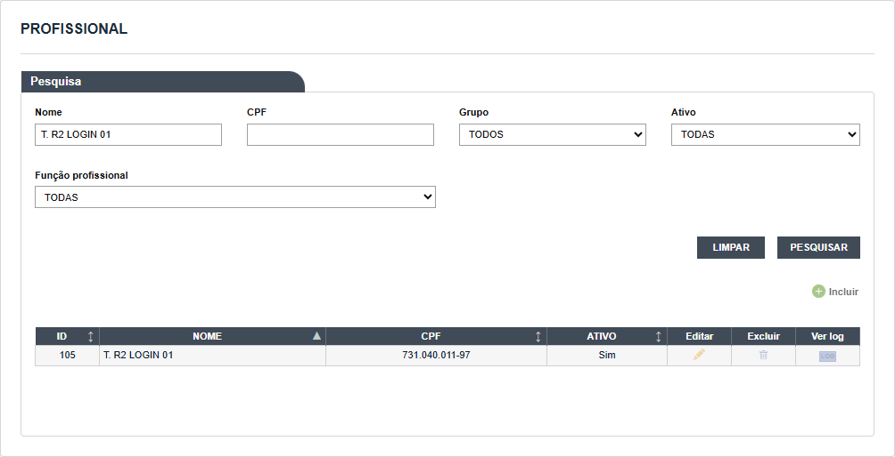
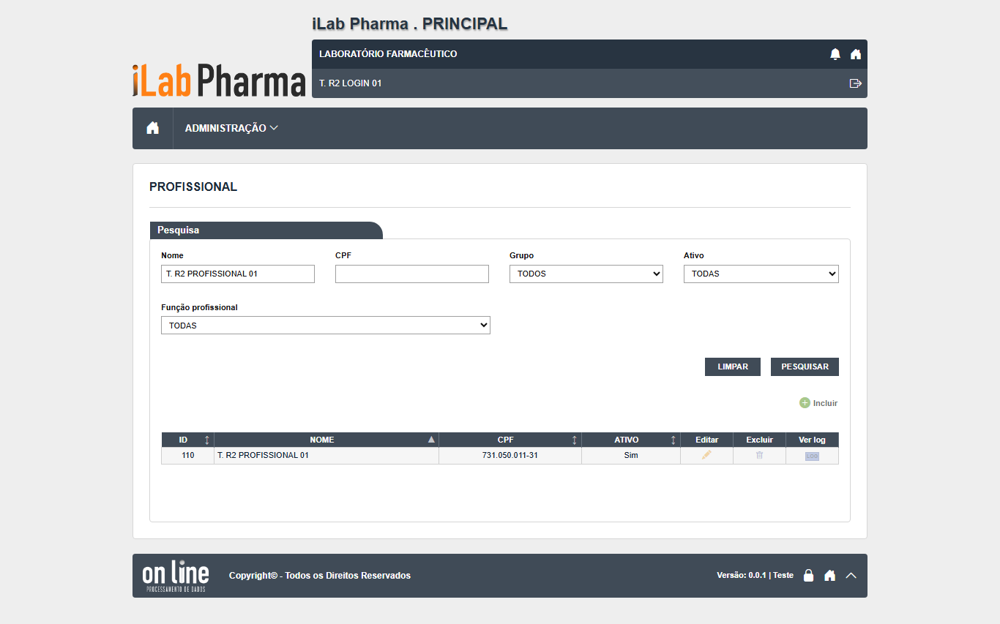

O que acontece ao confirmar ou salvar
- Incluir: grava o profissional, as ocupações e as funções escolhidas e registra "INCLUSÃO DO REGISTRO" no histórico. Depois de salvar, a tela volta à lista (conferido em 17/11/2026; a rodada 2 havia visto a tela ficar na edição).
- Alterar: grava os campos. Registram-se no histórico o cargo, a matrícula, o e-mail e a função alterados, mas não o telefone; a justificativa digitada aparece como "Justificativa: -". Salvar duas vezes seguidas sem mudar nada não cria linha no histórico.
- Inativar: exige justificativa, registra "ATIVO SIM → NÃO" e "JUSTIFICATIVA INATIVO"; o usuário não entra mais.
- Excluir: com justificativa, a pessoa some da lista e da pesquisa. Se ela tem conta, registros criados, função ou ocupação, a exclusão é recusada. Se o histórico dela continua acessível depois da exclusão, não foi possível verificar (o profissional some da lista e do histórico, e não há outro caminho na tela); falta também o DBA confirmar que o registro foi para a lixeira (a confirmar).
- Nome com apóstrofo e aspas é gravado como digitado.
O que o sistema recusa (mensagens exatas)
| Mensagem | Quando aparece |
|---|---|
| O nome do profissional é obrigatório. | Nome em branco |
| A data de nascimento do profissional é obrigatória/inválida. | Data em branco ou inválida |
| O sexo do profissional é obrigatório. | Sexo em branco |
| O nome da mãe do profissional é obrigatório. | Nome da mãe em branco |
| A UF da naturalidade do profissional é obrigatória. | UF da naturalidade em branco |
| O CPF informado é obrigatório/inválido. | CPF em branco (um CPF com dígito errado não é recusado: DV-PRI-N-016) |
| O CEP do profissional é obrigatório/inválido. | CEP em branco |
| O logradouro do profissional é obrigatório. | Logradouro em branco |
| O número é obrigatório. Informe o número ou digite S/N. | Número em branco |
| O país do profissional é obrigatório. | País em branco |
| O estado do profissional é obrigatório. | UF do endereço em branco |
| O município do profissional é obrigatório. | Município em branco |
| O bairro do profissional é obrigatório. | Bairro em branco |
| O grupo é obrigatório. | Grupo em branco (com esta, são 14 mensagens ao salvar vazio) |
| Já existe um profissional cadastrado com esse CPF. | CPF repetido (faixa; ela continua na tela depois de corrigir o CPF e salvar com outro erro: R2A-PRO-03) |
| O e-mail do profissional é inválido. | E-mail sem arroba (a mensagem aparece uma vez, sob o campo) |
| A justificativa é obrigatória para desativar o profissional. | Ativo = Não sem justificativa |
| A justificativa é obrigatória. | Excluir sem justificativa |
| Não foi possível efetuar a exclusão, pois existem associações para este usuário. | Excluir profissional com conta, com registros criados ou com função e ocupação (não diz qual associação) |
| Erro ao salvar o profissional. | Nome com 270 caracteres (250 gravam; conferido em 17/11/2026) |
Campos da tela
| Campo | Tipo | Tamanho | Obrigatório | Valores e regra | Observação |
|---|---|---|---|---|---|
| Lista: Nome | Texto | Sem limite informado (legado: 255) | Não | Procura dentro do nome; ignora acento e maiúsculas (Fase 2 de 09/11/2026) | |
| Lista: CPF | Máscara | 11 dígitos | Não | Igual ao CPF digitado | |
| Lista: Grupo, Ativo, Função profissional | Listas | Não se aplica | Não | Grupos, TODAS/SIM/NÃO, funções | |
| Nome | Texto | Até 270 na tela; o servidor grava até 250 | Sim | Apóstrofo e aspas aceitos; nome repetido com CPF diferente é aceito (pode ser homonímia) | |
| Data Nascimento | Data | dd/mm/aaaa | Sim | Datas impossíveis (2099, 1850) são aceitas (DV-PRI-N-047) | |
| Sexo | Lista | Não se aplica | Sim | Lista de opções (a opção Masculino aparece nos prints; demais opções: Ponto para validar) | |
| Data Cadastro | Data e hora travada | Não se aplica | Não se aplica | Preenchida pelo sistema | |
| Nome da Mãe | Texto | Sem limite informado (legado: 255) | Sim | ||
| Nome do Pai | Texto | Sem limite informado (legado: 255) | Não | ||
| UF Naturalidade e Naturalidade | Listas ligadas | Não se aplica | UF: sim | Os documentos falavam em 15 obrigatórios; ao salvar vazio a tela mostra 14 mensagens (conferido em 17/11/2026) | |
| CPF | Máscara | 11 dígitos | Sim | Único; dígitos não validados (DV-PRI-N-016); letras gravam só os números digitados | |
| Identidade, Órgão Emissor, Data Emissão | Texto, lista e data | Sem limite informado (legado: até 15) | Não | Emissão antes do nascimento é aceita (DV-PRI-N-047) | |
| Identidade Profissional e Órgão da Classe | Texto e duas listas | Sem limite informado (legado: até 15) | Não (do legado: com identidade profissional, o órgão da classe passa a ser obrigatório; a confirmar) | ||
| Telefone 1 e 2, Celular 1 e 2 | DDI, DD e Número | DDI vem 55 | Não | Letras são removidas sem aviso (DV-PRI-N-048) | |
| Operadora | Lista | Não se aplica | Não | Só habilita com DDD e número (do legado; a confirmar) | |
| Texto | Sem limite informado (legado: 255) | Não | Formato conferido ("O e-mail do profissional é inválido.", uma vez) | ||
| Ativo | Opção Sim/Não | Não se aplica | Sim (vem Sim) | Não exige Justificativa Inativo* | |
| Justificativa Inativo | Texto | Sem limite informado (legado: 255) | Sim, ao marcar Não | "A justificativa é obrigatória para desativar o profissional." | |
| CEP, Logradouro, Número, Complemento | Máscara e textos | Número aceita "S/N" | CEP, Logradouro e Número: sim | ||
| País, UF, Município, Bairro | Listas ligadas | Não se aplica | Sim | Fora do Brasil valem Código Postal e Cidade | |
| Setor, Cargo, Matrícula, Especialização | Lista e textos | Sem limite informado (legado: cargo 100, matrícula 12) | Não | ||
| Grupo | Lista | Não se aplica | Sim | A lista oferece grupos inativos (DV-PRI-N-033) | |
| Ocupações e Funções | Busca e grade | Não se aplica | Não | Digite ao menos 2 letras (1 letra não acha nada; conferido em 17/11/2026), escolha e clique no + | |
| Digite sua Justificativa | Texto | Sem limite informado (legado: 255) | Marcada com asterisco, mas não é exigida | Não é gravada no histórico (DV-PRI-N-015) | |
| Exclusão: Justificativa | Texto | Sem limite informado | Sim | "A justificativa é obrigatória." |
Quem pode usar (permissões)
Resultado dos testes de 08 e 09/11/2026 (quem-pode.csv), antes da revalidação de 16/11/2026; a linha "Só consulta" foi conferida de novo em 17/11/2026:
| Perfil de teste | Abrir | Pesquisar | Incluir | Editar | Excluir | Ver log | Imprimir |
|---|---|---|---|---|---|---|---|
| Administrador | Permitido | Permitido | Permitido | Permitido | Permitido (abre confirmação) | Permitido | Permitido |
| Só consulta | Permitido (tela do menu) | Permitido | Negado (botão desabilitado: "Sem permissão para incluir profissional") | Negado (lápis aparece apagado: "Sem permissão para alterar profissional") | Negado ("Sem permissão para excluir profissional") | Negado ("Sem permissão para consultar log") | Negado (os botões IMPRIMIR e X não aparecem) |
| Cadastro e "sem permissão de administrador" | Abre pelo endereço, mesmo fora do menu | Lista aparece | Negado | Negado | Negado | Negado | Não lido |
| Sem login | Volta ao Login | Não se aplica | Não se aplica | Não se aplica | Não se aplica | Não se aplica | Não se aplica |

A imagem mostra a lista para o perfil só de consulta: o lápis apagado, o ícone Incluir desabilitado e sem os botões IMPRIMIR e X. As mensagens de excluir e de log foram vistas por outra sessão do robô, sem print dedicado. O menu Administração desse perfil mostra Perfil, Profissional e Conta usuário.

Esta imagem (registrada pela outra sessão do robô, fora do CSV) mostra os ícones apagados do perfil só de consulta.
Revalidação de 16/11/2026 (DV-PRI-N-011): o servidor passou a recusar (403) a leitura de profissionais, perfis e contas por conta com perfil só de cadastros. O botão Imprimir some para quem não tem a função, mas o endereço das páginas de relatório abre mesmo assim (resultado de 10/11/2026).